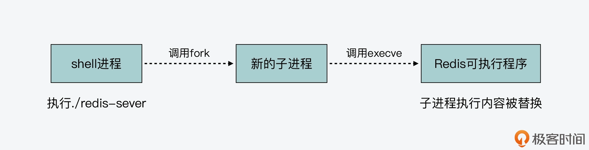
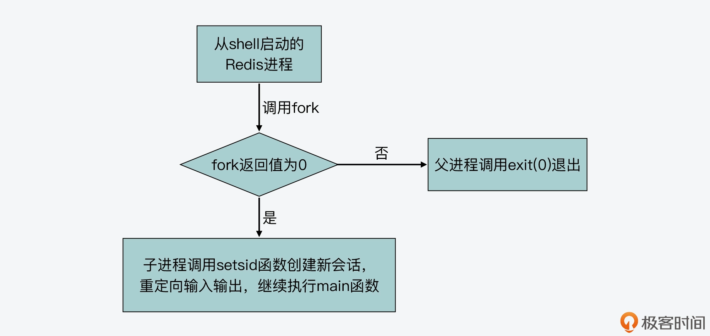
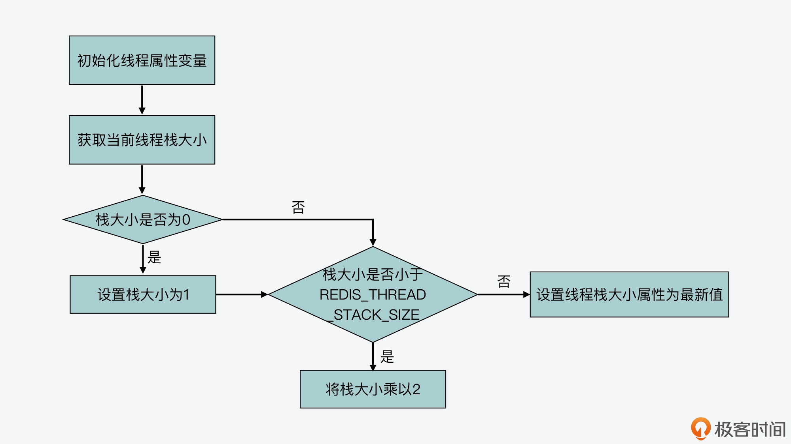
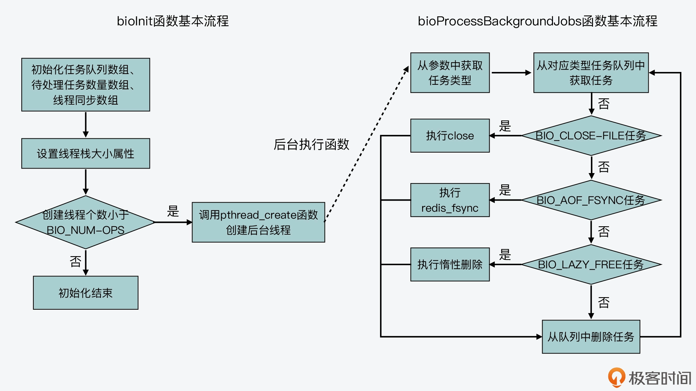
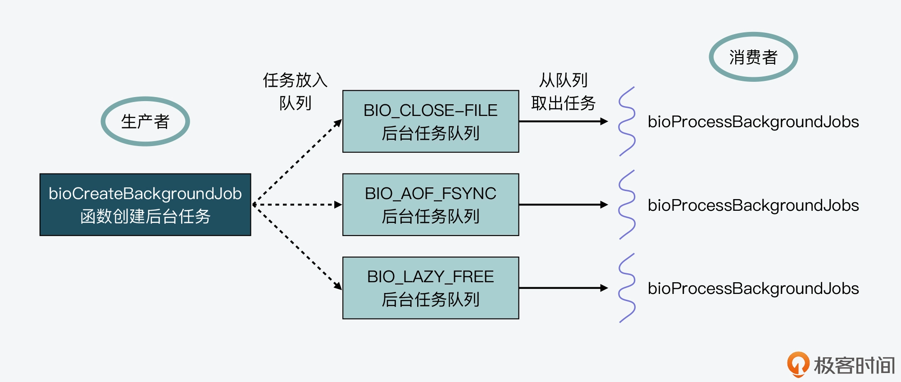

- 00 开篇词 阅读Redis源码能给你带来什么？.md.html
- 01 带你快速攻略Redis源码的整体架构.md.html
- 02 键值对中字符串的实现，用char还是结构体？.md.html
- 03 如何实现一个性能优异的Hash表？.md.html
- 04 内存友好的数据结构该如何细化设计？.md.html
- 05 有序集合为何能同时支持点查询和范围查询？.md.html
- 06 从ziplist到quicklist，再到listpack的启发.md.html
- 07 为什么Stream使用了Radix Tree？.md.html
- 08 Redis server启动后会做哪些操作？.md.html
- 09 Redis事件驱动框架（上）：何时使用select、poll、epoll？.md.html
- 10 Redis事件驱动框架（中）：Redis实现了Reactor模型吗？.md.html
- 11 Redis事件驱动框架（下）：Redis有哪些事件？.md.html
- 12 Redis真的是单线程吗？.md.html
- 13 Redis 6.0多IO线程的效率提高了吗？.md.html
- 14 从代码实现看分布式锁的原子性保证.md.html
- 15 为什么LRU算法原理和代码实现不一样？.md.html
- 16 LFU算法和其他算法相比有优势吗？.md.html
- 17 Lazy Free会影响缓存替换吗？.md.html
- 18 如何生成和解读RDB文件？.md.html
- 19 AOF重写（上）：触发时机与重写的影响.md.html
- 20 AOF重写（下）：重写时的新写操作记录在哪里？.md.html
- 21 主从复制：基于状态机的设计与实现.md.html
- 22 哨兵也和Redis实例一样初始化吗？.md.html
- 23 从哨兵Leader选举学习Raft协议实现（上）.md.html
- 24 从哨兵Leader选举学习Raft协议实现（下）.md.html
- 25 PubSub在主从故障切换时是如何发挥作用的？.md.html
- 26 从Ping-Pong消息学习Gossip协议的实现.md.html
- 27 从MOVED、ASK看集群节点如何处理命令？.md.html
- 28 Redis Cluster数据迁移会阻塞吗？.md.html
- 29 如何正确实现循环缓冲区？.md.html
- 30 如何在系统中实现延迟监控？.md.html
- 31 从Module的实现学习动态扩展功能.md.html
- 32 如何在一个系统中实现单元测试？.md.html
- 结束语 Redis源码阅读，让我们从新开始.md.html
- 捐赠
12 Redis真的是单线程吗？
今天这节课，我们来聊聊 Redis 的执行模型。
所谓的执行模型，就是指 Redis 运行时使用的进程、子进程和线程的个数，以及它们各自负责的工作任务。
你在实际使用 Redis 的时候，可能经常会听到类似“Redis 是单线程”“Redis 的主 IO 线程”，“Redis 包含多线程”等不同说法。我也听到不少同学提出困惑和疑问：Redis 到底是不是一个单线程的程序？
其实，彻底理解这个问题，有助于指导我们保持 Redis 高性能、低延迟的特性。如果说 Redis 就是单线程程序，那么，我们就需要避免所有容易引起线程阻塞的操作；而如果说 Redis 不只是单线程，还有其他线程在工作，那么，我们就需要了解多线程各自负责什么任务，负责请求解析和数据读写的线程有几个，有哪些操作是后台线程在完成，而不会影响请求解析和数据读写的。
所以，今天这节课，我就从 Redis server 启动后运行的进程开始，带你一边学习 Redis 源码中子进程和线程的创建方式，一边掌握 Redis server 运行时涉及到的进程、子进程和线程情况。
下面，我们先来看 Redis server 启动时的进程运行。
从 shell 命令执行到 Redis 进程创建
我们在启动 Redis 实例时，可以在 shell 命令行环境中，执行 redis-server 这个可执行文件，如下所示：
./redis-server /etc/redis/redis.conf
shell 运行这个命令后，它实际会调用 fork 系统调用函数，来新建一个进程。因为 shell 本身是一个进程，所以，这个通过 fork 新创建的进程就被称为是 shell 进程的子进程，而 shell 进程被称为父进程。关于 fork 函数的具体用法，我一会儿还会给你具体介绍。
紧接着，shell 进程会调用 execve 系统调用函数，将子进程执行的主体替换成 Redis 的可执行文件。而 Redis 可执行文件的入口函数就是 main 函数，这样一来，子进程就会开始执行 Redis server 的 main 函数了。
下面的代码显示了 execve 系统调用函数原型。其中，filename 是要运行的程序的文件名，argv[]和 envp[]分别是要运行程序的参数和环境变量。
int execve(const char *filename, char *const argv[], char *const envp[]))
下图显示了从 shell 执行命令到创建 Redis 进程的过程，你可以看下。

当我们用刚才介绍的 shell 命令运行 Redis server 后，我们会看到 Redis server 启动后的日志输出会打印到终端屏幕上，如下所示：
37807:M 19 Aug 2021 07:29:36.372 # Server initialized
37807:M 19 Aug 2021 07:29:36.372 * DB loaded from disk: 0.000 seconds
37807:M 19 Aug 2021 07:29:36.372 * Ready to accept connections
这是因为 shell 进程调用 fork 函数创建的子进程，会从父进程中继承一些属性，比如父进程打开的文件描述符。对于 shell 进程来说，它打开的文件描述符包括 0 和 1，这两个描述符分别代表了标准输入和标准输出。而 execve 函数只是把子进程的执行内容替换成 Redis 可执行文件，子进程从 shell 父进程继承到的标准输入和标准输出保持不变。
所以，Redis 运行时通过 serverLog 函数打印的日志信息，就会默认输出到终端屏幕上了，也就是 shell 进程的标准输出。
而一旦 Redis 进程创建开始运行后，它就会从 main 函数开始执行。我们在【第 8 讲】中已经学习了 main 函数的主要执行过程，所以我们会发现，它会调用不同的函数来执行相关功能。比如，main 函数调用 initServerConfig 函数初始化 Redis server 的运行参数，调用 loadServerConfig 函数解析配置文件参数。当 main 函数调用这些函数时，这些函数仍然是由原来的进程执行的。所以，在这种情况下，Redis 仍然是单个进程在运行。
不过，在 main 函数完成参数解析后，会根据两个配置参数 daemonize 和 supervised，来设置变量 background 的值。它们的含义分别是：
- 参数 daemonize 表示，是否要设置 Redis 以守护进程方式运行；
- 参数 supervised 表示，是否使用 upstart 或是 systemd 这两种守护进程的管理程序来管理 Redis。
那么，我们来进一步了解下守护进程。守护进程是在系统后台运行的进程，独立于 shell 终端，不再需要用户在 shell 中进行输入了。一般来说，守护进程用于执行周期性任务或是等待相应事件发生再进行处理。Redis server 本身就是在启动后，等待客户端输入，再进行处理。所以对于 Redis 这类服务器程序来说，我们通常会让它以守护进程方式运行。
好了，如果设置了 Redis 以守护进程方式执行，那么守护进程具体是怎么创建的呢？这就和 main 函数调用的 daemonize 函数相关了。daemonize 函数就是用来将 Redis 进程转换为守护进程来运行。
下面的代码显示了 main 函数根据变量 background 值，来判断是否执行 daemonize 函数的逻辑，你可以看下。
//如果配置参数daemonize为1，supervised值为0，那么设置background值为1，否则，设置其为0。
int main(int argc, char **argv) {
…
int background = server.daemonize && !server.supervised;
//如果background值为1，调用daemonize函数。
if (background) daemonize();
…
}
也就是说，如果 background 的值为 1，就表示 Redis 被设置为以守护进程方式运行，因此 main 函数就会调用 daemonize 函数。
那么，接下来，我们就来学习下 daemonize 函数是如何将 Redis 转为守护进程运行的。
从 daemonize 函数的执行学习守护进程的创建
我们首先来看 daemonize 函数的部分执行内容，如下所示。我们可以看到，daemonize 函数调用了 fork 函数，并根据 fork 函数返回值有不同的分支代码。
void daemonize(void) {
…
if (fork() != 0) exit(0); //fork成功执行或失败，则父进程退出
setsid(); //创建新的session
…
}
从刚才的介绍中，我们已经知道，当我们在一个程序的函数中调用 fork 函数时，fork 函数会创建一个子进程。而原本这个程序对应的进程，就称为这个子进程的父进程。那么，fork 函数执行后的不同分支和父、子进程是什么关系呢？这就和 fork 函数的使用有关了。
实际上，fork 函数的使用是比较有意思的，我们可以根据 fork 函数的不同返回值，来编写相应的分支代码，这些分支代码就对应了父进程和子进程各自要执行的逻辑。
为了便于你理解，我给你举个例子。我写了一段示例代码，这段代码的 main 函数会调用 fork 函数，并进一步根据 fork 函数的返回值是小于 0、等于 0，还是大于 0，来执行不同的分支。注意，fork 函数的不同返回值，其实代表了不同的含义，具体来说：
- 当返回值小于 0 时，此时表明 fork 函数执行有误；
- 当返回值等于 0 时，此时，返回值对应的代码分支就会在子进程中运行；
- 当返回值大于 0 时，此时，返回值对应的代码分支仍然会在父进程中运行。
这段示例代码如下：
#include <stdio.h>
#include <unistd.h>
int main(int argc, char *argv[]) {
printf("hello main\n");
int rv = fork(); //fork函数的返回值
//返回值小于0，表示fork执行错误
if (rv < 0) {
fprintf(stderr, "fork failed\n");
}
//返回值等于0，对应子进程执行
else if (rv == 0) {
printf("I am child process %d\n", getpid());
}
//返回值大于0，对应父进程执行
else {
printf("I am parent process of (%d), %d\n", rc, getpid());
}
return 0;
}
在这段代码中，我根据 fork 函数的返回值，分别写了三个分支代码，其中返回值等于 0 对应的代码分支，是子进程执行的代码。子进程会打印字符串“I am child process”，并打印子进程的进程号。而返回值大于 0 对应的代码分支，是父进程的代码。父进程会打印字符串“I am parent process of”，并打印它所创建的子进程进程号和它自身的进程号。
那么，如果你把这段代码编译后执行，你可以看到类似如下的结果，父进程打印了它的进程号 62794，而子进程则打印了它的进程号 62795。这表明刚才示例代码中的不同分支的确是由父、子进程来执行的。这也就是说，我们可以在 fork 函数执行后，使用不同分支，让父、子进程执行不同内容。
hello main
I am parent process of (62795), 62794
I am child process 62795
好了，了解了 fork 函数创建子进程的知识后，我们再来看下刚才介绍的 daemonize 函数。
现在我们已经知道，daemonize 函数调用 fork 函数后，可以根据 fork 函数返回值设置不同代码分支，对应父、子进程执行内容。其实，daemonize 函数也的确设置了两个代码分支。
- 分支一
这个分支对应 fork 函数返回值不为 0，表示 fork 函数成功执行后的父进程执行逻辑或是 fork 函数执行失败的执行逻辑。此时，父进程会调用 exit(0) 函数退出。也就是说，如果 fork 函数成功执行，父进程就退出了。当然，如果 fork 函数执行失败了，那么子进程也没有能成功创建，父进程也就退出执行了。你可以看下下面的代码，展示了这个分支。
void daemonize(void) {
…
if (fork() != 0) exit(0); //fork成功执行或失败，则父进程退出
…
}
- 分支二
这个分支对应 fork 函数返回值为 0，为子进程的执行逻辑。子进程首先会调用 setsid 函数，创建一个新的会话。
然后，子进程会用 open 函数打开 /dev/null 设备，并把它的标准输入、标准输出和标准错误输出，重新定向到 /dev/null 设备。因为守护进程是在后台运行，它的输入输出是独立于 shell 终端的。所以，为了让 Redis 能以守护进程方式运行，这几步操作的目的就是把当前子进程的输入、输出由原来的 shell 终端，转向 /dev/null 设备，这样一来，就不再依赖于 shell 终端了，满足了守护进程的要求。
我把 daemonize 函数的代码放在这里，你可以看下。
void daemonize(void) {
…
setsid(); //为子进程创建新的session
//将子进程的标准输入、标准输出、标准错误输出重定向到/dev/null中
if ((fd = open("/dev/null", O_RDWR, 0)) != -1) {
dup2(fd, STDIN_FILENO);
dup2(fd, STDOUT_FILENO);
dup2(fd, STDERR_FILENO);
if (fd > STDERR_FILENO) close(fd);
}
}
好了，到这里，我们就了解了，Redis 的 main 函数会根据配置参数 daemonize 和 supervised，来判断是否以守护进程方式运行 Redis。
那么，一旦 Redis 要以守护进程方式运行，main 函数会调用 daemonize 函数。daemonize 函数会进一步调用 fork 函数创建子进程，并根据返回值，分别执行父进程和子进程的代码分支。其中，父进程会退出。而子进程会代替原来的父进程，继续执行 main 函数的代码。
下面的图展示了 daemonize 函数调用 fork 函数后的两个分支的执行逻辑，你可以再回顾下。

事实上，Redis server 启动后无论是否以守护进程形式运行，都还是一个进程在运行。对于一个进程来说，如果该进程启动后没有创建新的线程，那么这个进程的工作任务默认就是由一个线程来执行的，而这个线程我一般也称它为主线程。
对于 Redis 来说，它的主要工作，包括接收客户端请求、解析请求和进行数据读写等操作，都没有创建新线程来执行，所以，Redis 主要工作的确是由单线程来执行的，这也是我们常说 Redis 是单线程程序的原因。因为 Redis 主要工作都是 IO 读写操作，所以，我也会把这个单线程称为主 IO 线程。
但其实，Redis 在 3.0 版本后，除了主 IO 线程外，的确还会启动一些后台线程来处理部分任务，从而避免这些任务对主 IO 线程的影响。那么，这些后台线程是在哪里启动的，又是如何执行的呢？
这就和 Redis 的bio.c文件相关了。接下来，我们就来从这个文件中学习下 Redis 的后台线程。
从 bio.c 文件学习 Redis 的后台线程
我们先来看下 main 函数在初始化过程最后调用的 InitServerLast 函数。InitServerLast 函数的作用是进一步调用 bioInit 函数，来创建后台线程，让 Redis 把部分任务交给后台线程处理。这个过程如下所示。
void InitServerLast() {
bioInit();
…
}
bioInit 函数是在bio.c文件中实现的，它的主要作用调用 pthread_create 函数创建多个后台线程。不过在具体了解 bioInit 函数之前，我们先来看下 bio.c 文件中定义的主要数组，这也是在 bioInit 函数中要进行初始化的。
bio.c 文件针对要创建的线程，定义了 pthread_t 类型的数组 bio_threads，用来保存创建的线程描述符。此外，bio.c 文件还创建了一个保存互斥锁的数组 bio_mutex，以及两个保存条件变量的数组 bio_newjob_cond 和 bio_step_cond。以下代码展示了这些数组的创建逻辑，你可以看下。
//保存线程描述符的数组
static pthread_t bio_threads[BIO_NUM_OPS];
//保存互斥锁的数组
static pthread_mutex_t bio_mutex[BIO_NUM_OPS];
//保存条件变量的两个数组
static pthread_cond_t bio_newjob_cond[BIO_NUM_OPS];
static pthread_cond_t bio_step_cond[BIO_NUM_OPS];
从中你可以注意到，这些数组的大小都是宏定义 BIO_NUM_OPS，这个宏定义是在bio.h文件中定义的，默认值为 3。
同时在 bio.h 文件中，你还可以看到另外三个宏定义，分别是 BIO_CLOSE_FILE、BIO_AOF_FSYNC 和 BIO_LAZY_FREE。它们的代码如下所示：
#define BIO_CLOSE_FILE 0 /* Deferred close(2) syscall. */
#define BIO_AOF_FSYNC 1 /* Deferred AOF fsync. */
#define BIO_LAZY_FREE 2 /* Deferred objects freeing. */
#define BIO_NUM_OPS 3
其中，BIO_NUM_OPS 表示的是 Redis 后台任务的类型有三种。而 BIO_CLOSE_FILE、BIO_AOF_FSYNC 和 BIO_LAZY_FREE，它们分别表示三种后台任务的操作码，这些操作码可以用来标识不同的任务。
- BIO_CLOSE_FILE：文件关闭后台任务。
- BIO_AOF_FSYNC：AOF 日志同步写回后台任务。
- BIO_LAZY_FREE：惰性删除后台任务。
实际上，bio.c 文件创建的线程数组、互斥锁数组和条件变量数组，大小都是包含三个元素，也正是对应了这三种任务。
bioInit 函数：初始化数组
接下来，我们再来了解下 bio.c 文件中的初始化和线程创建函数 bioInit。我刚才也给你介绍过这个函数，它是 main 函数执行完 server 初始化后，通过 InitServerLast 函数调用的。也就是说，Redis 在完成 server 初始化后，就会创建线程来执行后台任务。
所以从这里来看，Redis 在运行时其实已经不止是单个线程（也就是主 IO 线程）在运行了，还会有后台线程在运行。如果你以后遇到 Redis 是否是单线程的问题时，你就可以给出准确答案了。
bioInit 函数首先会初始化互斥锁数组和条件变量数组。然后，该函数会调用 listCreate 函数，给 bio_jobs 这个数组的每个元素创建一个列表，同时给 bio_pending 数组的每个元素赋值为 0。这部分代码如下所示：
for (j = 0; j < BIO_NUM_OPS; j++) {
pthread_mutex_init(&bio_mutex[j],NULL);
pthread_cond_init(&bio_newjob_cond[j],NULL);
pthread_cond_init(&bio_step_cond[j],NULL);
bio_jobs[j] = listCreate();
bio_pending[j] = 0;
}
那么，要想了解给 bio_jobs 数组和 bio_pending 数组元素赋值的作用，我们就需要先搞清楚这两个数组的含义：
- bio_jobs 数组的元素是 bio_jobs 结构体类型，用来表示后台任务。该结构体的成员变量包括了后台任务的创建时间 time，以及任务的参数。为该数组的每个元素创建一个列表，其实就是为每个后台线程创建一个要处理的任务列表。
- bio_pending 数组的元素类型是 unsigned long long，用来表示每种任务中，处于等待状态的任务个数。将该数组每个元素初始化为 0，其实就是表示初始时，每种任务都没有待处理的具体任务。
下面的代码展示了 bio_job 结构体，以及 bio_jobs 和 bio_pending 这两个数组的定义，你也可以看下。
struct bio_job {
time_t time; //任务创建时间
void *arg1, *arg2, *arg3; //任务参数
};
//以后台线程方式运行的任务列表
static list *bio_jobs[BIO_NUM_OPS];
//被阻塞的后台任务数组
static unsigned long long bio_pending[BIO_NUM_OPS];
好了，到这里，你就了解了 bioInit 函数执行时，会把线程互斥锁、条件变量对应数组初始化为 NULL，同时会给每个后台线程创建一个任务列表（对应 bio_jobs 数组的元素），以及会设置每种任务的待处理个数为 0（对应 bio_pending 数组的元素）。
bioInit 函数：设置线程属性并创建线程
在完成了初始化之后，接下来，bioInit 函数会先通过 pthread_attr_t 类型的变量，给线程设置属性。然后，bioInit 函数会调用前面我提到的 pthread_create 函数来创建线程。
不过，为了能更好地理解 bioInit 函数设置线程属性和创建线程的过程，我们需要先对 pthread_create 函数本身有所了解，该函数的原型如下所示：
int pthread_create(pthread_t *tidp, const pthread_attr_t *attr,
( void *)(*start_routine)( void *), void *arg);
可以看到，pthread_create 函数一共有 4 个参数，分别是：
- *tidp，指向线程数据结构 pthread_t 的指针；
- *attr，指向线程属性结构 pthread_attr_t 的指针；
- *start_routine，线程所要运行的函数的起始地址，也是指向函数的指针；
- *arg，传给运行函数的参数。
了解了 pthread_create 函数之后，我们来看下 bioInit 函数的具体操作。
首先，bioInit 函数会调用 pthread_attr_init 函数，初始化线程属性变量 attr，然后调用 pthread_attr_getstacksize 函数，获取线程的栈大小这一属性的当前值，并根据当前栈大小和 REDIS_THREAD_STACK_SIZE 宏定义的大小（默认值为 4MB），来计算最终的栈大小属性值。紧接着，bioInit 函数会调用 pthread_attr_setstacksize 函数，来设置栈大小这一属性值。
下面的代码展示了线程属性的获取、计算和设置逻辑，你可以看下。
pthread_attr_init(&attr);
pthread_attr_getstacksize(&attr,&stacksize);
if (!stacksize) stacksize = 1; /针对Solaris系统做处理
while (stacksize < REDIS_THREAD_STACK_SIZE) stacksize *= 2;
pthread_attr_setstacksize(&attr, stacksize);
我也画了一张图，展示了线程属性的这一操作过程，你可以看下。

在完成线程属性的设置后，接下来，bioInit 函数会通过一个 for 循环，来依次为每种后台任务创建一个线程。循环的次数是由 BIO_NUM_OPS 宏定义决定的，也就是 3 次。相应的，bioInit 函数就会调用 3 次 pthread_create 函数，并创建 3 个线程。bioInit 函数让这 3 个线程执行的函数都是 bioProcessBackgroundJobs。
不过这里要注意一点，就是在这三次线程的创建过程中，传给这个函数的参数分别是 0、1、2。这个创建过程如下所示：
for (j = 0; j < BIO_NUM_OPS; j++) {
void *arg = (void*)(unsigned long) j;
if (pthread_create(&thread,&attr,bioProcessBackgroundJobs,arg) != 0) {
… //报错信息
}
bio_threads[j] = thread;
}
你看了这个代码，可能会有一个小疑问：为什么创建的 3 个线程，它们所运行的 bioProcessBackgroundJobs 函数接收的参数分别是 0、1、2 呢？
这就和 bioProcessBackgroundJobs 函数的实现有关了，我们来具体看下。
bioProcessBackgroundJobs 函数：处理后台任务
首先，bioProcessBackgroundJobs 函数会把接收到的参数 arg，转成 unsigned long 类型，并赋值给 type 变量，如下所示：
void *bioProcessBackgroundJobs(void *arg) {
…
unsigned long type = (unsigned long) arg;
…
}
而 type 变量表示的就是后台任务的操作码。这也是我刚才给你介绍的三种后台任务类型 BIO_CLOSE_FILE、BIO_AOF_FSYNC 和 BIO_LAZY_FREE 对应的操作码，它们的取值分别为 0、1、2。
bioProcessBackgroundJobs 函数的主要执行逻辑是一个 while(1) 的循环。在这个循环中，bioProcessBackgroundJobs 函数会从 bio_jobs 这个数组中取出相应任务，并根据任务类型，调用具体的函数来执行。
我刚才已经介绍过，bio_jobs 数组的每一个元素是一个队列。而因为 bio_jobs 数组的元素个数，等于后台任务的类型个数（也就是 BIO_NUM_OPS），所以，bio_jobs 数组的每个元素，实际上是对应了某一种后台任务的任务队列。
在了解了这一点后，我们就容易理解 bioProcessBackgroundJobs 函数中的 while 循环了。因为传给 bioProcessBackgroundJobs 函数的参数，分别是 0、1、2，对应了三种任务类型，所以在这个循环中，bioProcessBackgroundJobs 函数会一直不停地从某一种任务队列中，取出一个任务来执行。
同时，bioProcessBackgroundJobs 函数会根据传入的任务操作类型调用相应函数，具体来说：
- 任务类型是 BIO_CLOSE_FILE，则调用 close 函数；
- 任务类型是 BIO_AOF_FSYNC，则调用 redis_fsync 函数；
- 任务类型是 BIO_LAZY_FREE，则再根据参数个数等情况，分别调用 lazyfreeFreeObjectFromBioThread、lazyfreeFreeDatabaseFromBioThread 和 lazyfreeFreeSlotsMapFromBioThread 这三个函数。
最后，当某个任务执行完成后，bioProcessBackgroundJobs 函数会从任务队列中，把这个任务对应的数据结构删除。我把这部分代码放在这里，你可以看下。
while(1) {
listNode *ln;
…
//从类型为type的任务队列中获取第一个任务
ln = listFirst(bio_jobs[type]);
job = ln->value;
…
//判断当前处理的后台任务类型是哪一种
if (type == BIO_CLOSE_FILE) {
close((long)job->arg1); //如果是关闭文件任务，那就调用close函数
} else if (type == BIO_AOF_FSYNC) {
redis_fsync((long)job->arg1); //如果是AOF同步写任务，那就调用redis_fsync函数
} else if (type == BIO_LAZY_FREE) {
//如果是惰性删除任务，那根据任务的参数分别调用不同的惰性删除函数执行
if (job->arg1)
lazyfreeFreeObjectFromBioThread(job->arg1);
else if (job->arg2 && job->arg3)
lazyfreeFreeDatabaseFromBioThread(job->arg2,job->arg3);
else if (job->arg3)
lazyfreeFreeSlotsMapFromBioThread(job->arg3);
} else {
serverPanic("Wrong job type in bioProcessBackgroundJobs().");
}
…
//任务执行完成后，调用listDelNode在任务队列中删除该任务
listDelNode(bio_jobs[type],ln);
//将对应的等待任务个数减一。
bio_pending[type]--;
…
}
所以说，bioInit 函数其实就是创建了 3 个线程，每个线程不停地去查看任务队列中是否有任务，如果有任务，就调用具体函数执行。
你可以再参考回顾下图所展示的 bioInit 函数和 bioProcessBackgroundJobs 函数的基本处理流程。

不过接下来你或许还会疑惑：既然 bioProcessBackgroundJobs 函数是负责执行任务的，那么哪个函数负责生成任务呢？
这就是下面，我要给你介绍的后台任务创建函数 bioCreateBackgroundJob。
bioCreateBackgroundJob 函数：创建后台任务
bioCreateBackgroundJob 函数的原型如下，它会接收 4 个参数，其中，参数 type 表示该后台任务的类型，剩下来的 3 个参数，则对应了后台任务函数的参数，如下所示：
void bioCreateBackgroundJob(int type, void *arg1, void *arg2, void *arg3)
bioCreateBackgroundJob 函数在执行时，会先创建 bio_job，这是后台任务对应的数据结构。然后，后台任务数据结构中的参数，会被设置为 bioCreateBackgroundJob 函数传入的参数 arg1、arg2 和 arg3。
最后，bioCreateBackgroundJob 函数调用 listAddNodeTail 函数，将刚才创建的任务加入到对应的 bio_jobs 队列中，同时，将 bio_pending 数组的对应值加 1，表示有个任务在等待执行。
{
//创建新的任务
struct bio_job *job = zmalloc(sizeof(*job));
//设置任务数据结构中的参数
job->time = time(NULL);
job->arg1 = arg1;
job->arg2 = arg2;
job->arg3 = arg3;
pthread_mutex_lock(&bio_mutex[type]);
listAddNodeTail(bio_jobs[type],job); //将任务加到bio_jobs数组的对应任务列表中
bio_pending[type]++; //将对应任务列表上等待处理的任务个数加1
pthread_cond_signal(&bio_newjob_cond[type]);
pthread_mutex_unlock(&bio_mutex[type]);
}
好了，这样一来，当 Redis 进程想要启动一个后台任务时，只要调用 bioCreateBackgroundJob 函数，并设置好该任务对应的类型和参数即可。然后，bioCreateBackgroundJob 函数就会把创建好的任务数据结构，放到后台任务对应的队列中。另一方面，bioInit 函数在 Redis server 启动时，创建的线程会不断地轮询后台任务队列，一旦发现有任务可以执行，就会将该任务取出并执行。
其实，这种设计方式是典型的生产者 - 消费者模型。bioCreateBackgroundJob 函数是生产者，负责往每种任务队列中加入要执行的后台任务，而 bioProcessBackgroundJobs 函数是消费者，负责从每种任务队列中取出任务来执行。然后 Redis 创建的后台线程，会调用 bioProcessBackgroundJobs 函数，从而实现一直循环检查任务队列。
下图展示的就是 bioCreateBackgroundJob 和 bioProcessBackgroundJobs 两者间的生产者 - 消费者模型，你可以看下。

好了，到这里，我们就学习了 Redis 后台线程的创建和运行机制。简单来说，主要是以下三个关键点：
- Redis 是先通过 bioInit 函数初始化和创建后台线程；
- 后台线程运行的是 bioProcessBackgroundJobs 函数，这个函数会轮询任务队列，并根据要处理的任务类型，调用相应函数进行处理；
- 后台线程要处理的任务是由 bioCreateBackgroundJob 函数来创建的，这些任务创建后会被放到任务队列中，等待 bioProcessBackgroundJobs 函数处理。
小结
今天这节课，我给你介绍了 Redis 的执行模型，并且也从源码的角度出发，通过分析代码，带你了解了 Redis 进程创建、以子进程方式创建的守护进程、以及后台线程和它们负责的工作任务。同时，这也解答了你在面试中可能经常会被问到的问题：Redis 是单线程程序吗？
事实上，Redis server 启动后，它的主要工作包括接收客户端请求、解析请求和进行数据读写等操作，是由单线程来执行的，这也是我们常说 Redis 是单线程程序的原因。
但是，学完这节课你应该也知道，Redis 还启动了 3 个线程来执行文件关闭、AOF 同步写和惰性删除等操作，从这个角度来说，Redis 又不能算单线程程序，它还是有多线程的。而且，在下节课，我会给你介绍 Redis 6.0 中多 IO 线程的实现，从多 IO 线程角度看，Redis 也无法称为是单线程程序了。
另外学完了这节课之后，你还需要重点注意下，fork 函数使用和生产者 - 消费者模型这两个关键知识点。
首先是 fork 函数的使用。fork 函数可以在一个进程运行时，再创建一个子进程。当 Redis 被配置为以守护进程方式运行时，Redis 的 main 函数就是调用 fork 函数，创建子进程，让子进程以守护进程形式执行，并让一开始启动执行的父进程退出。因为，子进程会从父进程那继承代码，所以 main 函数中的执行逻辑就交给了子进程继续执行。
其次是生产者 - 消费者模型。Redis 在 bio.c 和 bio.h 文件中创建了后台线程，并实现了后台任务的执行。你要重点关注一下这里使用的生产者 - 消费者执行模型，这也是 bio.c 实现后台任务执行的核心设计思想。而且，当你需要实现异步的任务执行时，生产者 - 消费者模型就是一个很好的解决方案，你可以从 Redis 源码中掌握这个方案的实现思路。
每课一问
Redis 后台任务使用 bio_job 结构体来描述，该结构体用了三个指针变量来表示任务参数，如下所示。如果我们创建的任务，所需要的参数大于 3 个，你有什么应对方法来传参么？
struct bio_job {
time_t time;
void *arg1, *arg2, *arg3; //传递给任务的参数
};
欢迎在留言区分享你的答案和思考过程，如果觉得有收获，也欢迎你把今天的内容分享给更多的朋友。
© 2019 - 2023 Liangliang Lee. Powered by gin and hexo-theme-book.